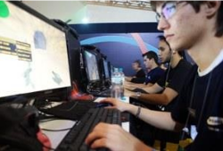

🏢 Bem-vindos à nossa sede em Valongo, Porto! Um espaço moderno, criativo e pensado para inspirar os melhores criadores de videojogos. É aqui que o Kill of Reason ganha vida todos os dias.
❤️👍🔥 28.4K1.1K comentários2.3K partilhas
ManyGames
há 2 dias · 🌐
🤝 Diversidade e Inclusão não são apenas palavras para nós — são os pilares da nossa cultura.
Na ManyGames promovemos um ambiente inclusivo com foco em: ✅ Equipas diversas ✅ Clima inclusivo
Acreditamos que equipas diferentes produzem jogos melhores para todos.
❤️🤝😍 41.7K3.2K comentários8.1K partilhas
ManyGames
há 4 dias · 🌐
🔥 Cultura Rebelde — aprimoramos todos os aspetos de como trabalhamos, nos divertimos e colaboramos juntos.
Os nossos pilares: 🎯 Liderança forte ⚙️ Sistemas e Processos 📚 Educação e Reconhecimento
Começamos com novos valores e espalhamo-los por toda a empresa!

❤️🔥💡 19.3K987 comentários3.4K partilhas
ManyGames
há 6 dias · 🌐
📚 Educação para todos.
A ManyGames promove soluções inovadoras para elevar o nível dos sistemas educacionais em todo o mundo. Porque acreditamos que qualquer pessoa com paixão e perseverança pode causar um impacto positivo.